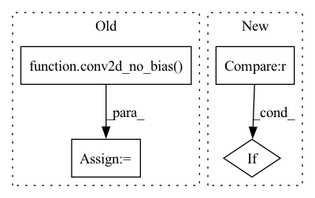

Pattern ID :38989

Before Change
def aot_stem(inputs, stem_width, activation="relu", deep_stem=False, quad_stem=False, quad_stem_act=False, name=""):
if deep_stem:
nn = conv2d_no_bias(inputs, stem_width // 2, 3, strides=2, padding="same", name=name + "1_")
nn = batchnorm_with_activation(nn, activation=activation, name=name + "1_")
nn = conv2d_no_bias(nn, stem_width // 2, 3, strides=1, padding="same", name=name + "2_")
nn = batchnorm_with_activation(nn, activation=activation, name=name + "2_")
nn = conv2d_no_bias(nn, stem_width, 3, strides=1, padding="same", name=name + "3_")
After Change
nn = deep_stem(inputs, stem_width, activation=activation, last_strides=last_strides, name=name)
elif stem_type == "quad":
nn = quad_stem(inputs, stem_width, activation=activation, stem_act=quad_stem_act, last_strides=last_strides, name=name)
elif stem_type == "tiered":
nn = tiered_stem(inputs, stem_width, activation=activation, last_strides=last_strides, name=name)
else:
nn = conv2d_no_bias(inputs, stem_width, 7, strides=2, padding="same", name=name)
In pattern: SUPERPATTERN
Frequency: 3
Non-data size: 4
Instances
Fragment ID: 111121439
Project Name: leondgarse/keras_cv_attention_models
Commit Name: a6b256994deba19f65ec593111c13c3744960557
Time: 2021-10-13
Author: leondgarse@gmail.com
File Name: keras_cv_attention_models/aotnet/aotnet.py
M Class Name: AnonimousClass
N Class Name: AnonimousClass
M Method Name: aot_stem(7)
N Method Name: aot_stem(7)
M Parent Class:
N Parent Class:
M File Name: keras_cv_attention_models/aotnet/aotnet.py
N File Name: keras_cv_attention_models/aotnet/aotnet.py
M Start Line: 139
M End Line: 158
N Start Line: 192
N End Line: 202
'>
Before Change
elif attn_type == "outlook": // outlook_attention
nn = attention_layers.outlook_attention(nn, filters, **OUTLOOK_PARAMS, name=name + "outlook_")
elif attn_type == "groups_conv": // ResNeXt like
nn = conv2d_no_bias(nn, filters, **GROUPS_CONV_PARAMS, strides=strides, padding="SAME", name=name + "GC_")
else: // ResNet block
nn = conv2d_no_bias(nn, filters, 3, strides=strides, padding="SAME", name=name + "conv_")
if attn_type in ["mhsa", "cot", "outlook"] and strides != 1: // Downsample
nn = keras.layers.ZeroPadding2D(padding=1, name=name + "pad")(nn)
nn = keras.layers.AveragePooling2D(pool_size=3, strides=strides, name=name + "pool")(nn)
if use_bn:
After Change
inputs, filters, strides=1, attn_type=None, attn_params=None, se_ratio=0, use_eca=False, groups=1, use_bn=True, activation="relu", name=""
):
nn = inputs
if attn_params is not None:
default_attn_params = DEFAULT_PARAMS.get(attn_type, {}).copy()
default_attn_params.update(attn_params)
attn_params = default_attn_params
'>
Fragment ID: 111121465
Project Name: leondgarse/keras_cv_attention_models
Commit Name: a6b256994deba19f65ec593111c13c3744960557
Time: 2021-10-13
Author: leondgarse@gmail.com
File Name: keras_cv_attention_models/aotnet/aotnet.py
M Class Name: AnonimousClass
N Class Name: AnonimousClass
M Method Name: attn_block(11)
N Method Name: attn_block(8)
M Parent Class:
N Parent Class:
M File Name: keras_cv_attention_models/aotnet/aotnet.py
N File Name: keras_cv_attention_models/aotnet/aotnet.py
M Start Line: 18
M End Line: 42
N Start Line: 30
N End Line: 70
'>
Before Change
// nn = keras.layers.Activation(activation=activation)(nn)
nn = batchnorm_with_activation(nn, activation=activation, zero_gamma=False, name=name + "halo_")
// round(planes * self.expansion * rb), expansion = 2
nn = conv2d_no_bias(nn, expanded_filter, 1, name=name + "2_")
nn = batchnorm_with_activation(nn, activation=None, zero_gamma=True, name=name + "2_")
// print(">>>>", nn.shape, shortcut.shape)
nn = keras.layers.Add(name=name + "add")([shortcut, nn])
After Change
deep = conv2d_no_bias(inputs, filter, 1, name=name + "deep_1_")
deep = batchnorm_with_activation(deep, activation=activation, zero_gamma=False, name=name + "deep_1_")
if attn_type == "halo":
out_shape = int(filter * halo_expansion)
deep = halo_attention(deep, num_heads, key_dim, block_size, halo_size, strides=strides, out_shape=out_shape, out_weight=False, name=name + "halo_")
else:
'>
Fragment ID: 111121492
Project Name: leondgarse/keras_cv_attention_models
Commit Name: 05af42a74bfe6c38e41e8155780ac9e3f4864370
Time: 2021-09-30
Author: leondgarse@gmail.com
File Name: keras_cv_attention_models/halonet/halonet.py
M Class Name: AnonimousClass
N Class Name: AnonimousClass
M Method Name: halo_block(15)
N Method Name: halo_block(11)
M Parent Class:
N Parent Class:
M File Name: keras_cv_attention_models/halonet/halonet.py
N File Name: keras_cv_attention_models/halonet/halonet.py
M Start Line: 80
M End Line: 104
N Start Line: 96
N End Line: 137